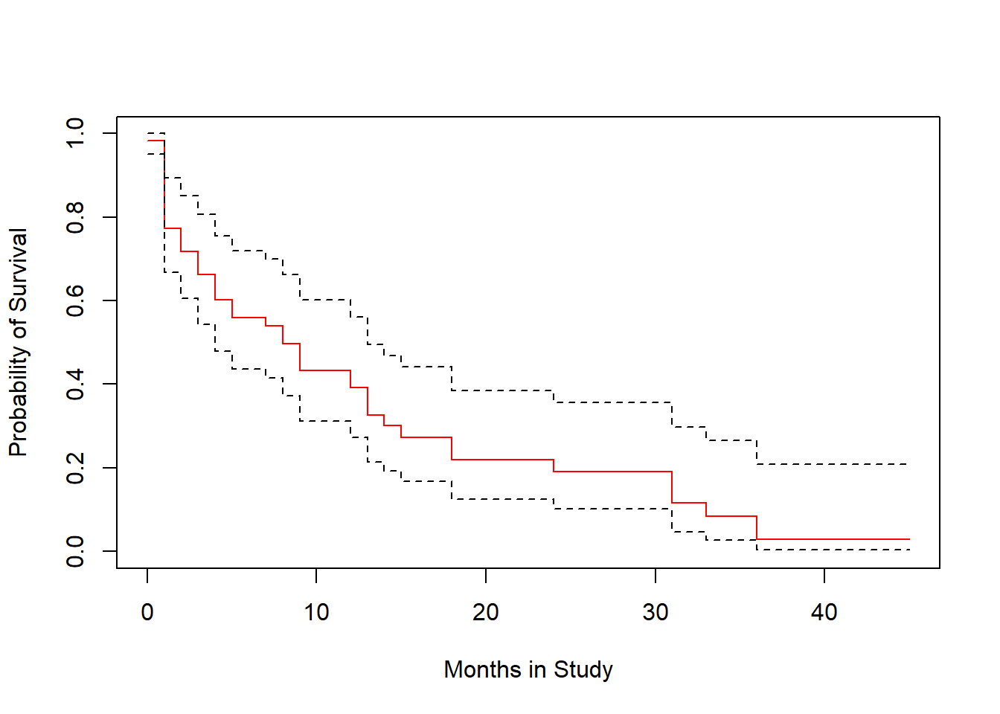
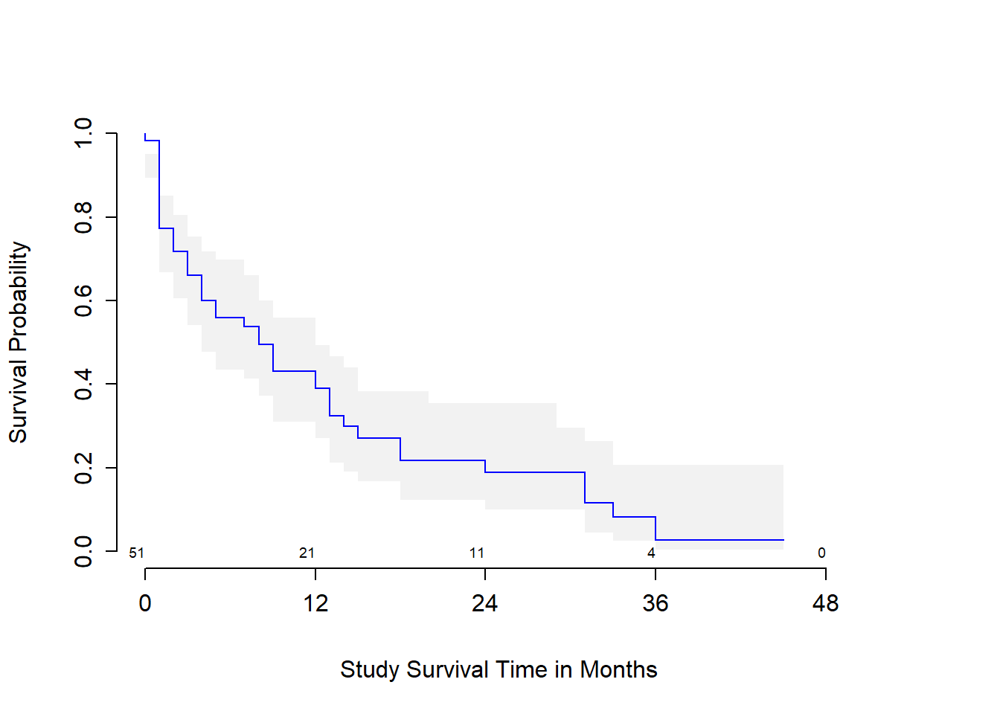
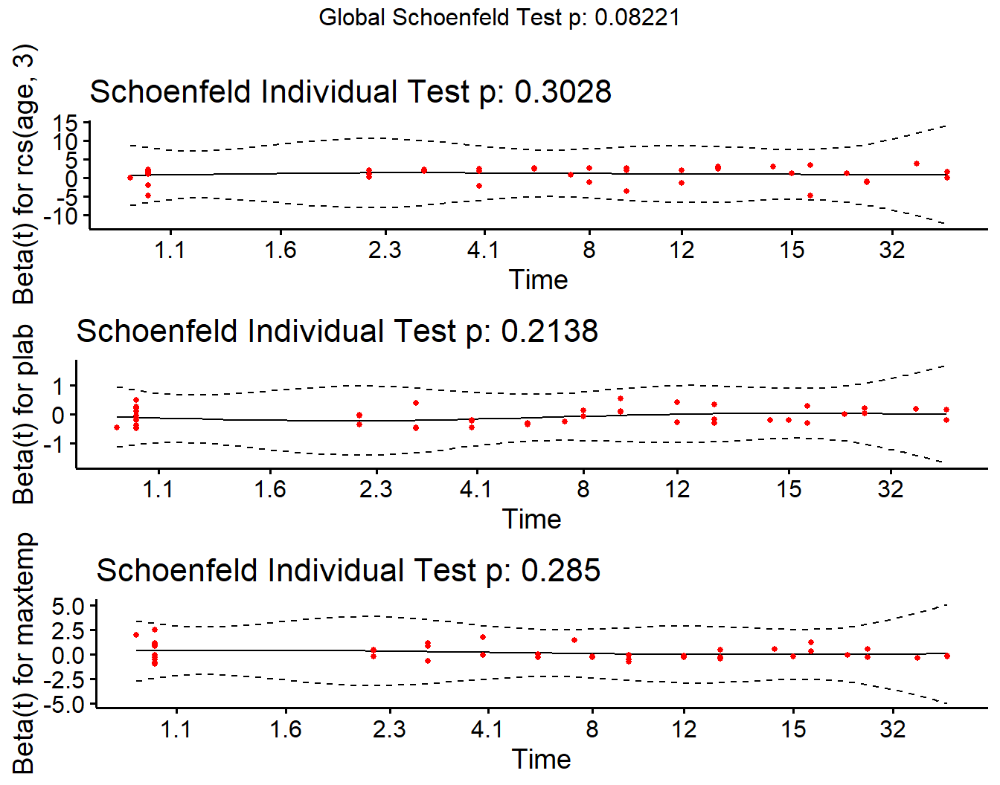

knitr::opts_chunk$set(comment = NA)
library(broom)
library(survival)
library(survminer)
library(rms)
library(tidyverse)
theme_set(theme_bw())31 Cox Regression Models, Part 2
31.1 R Setup Used Here
31.1.1 Data Load
leukem <- read_csv("data/leukem.csv", show_col_types = FALSE) 31.2 A Second Example: The leukem data
leukem# A tibble: 51 × 8
id age pblasts pinf plab maxtemp months alive
<dbl> <dbl> <dbl> <dbl> <dbl> <dbl> <dbl> <dbl>
1 1 20 78 39 7 99 18 0
2 2 25 64 61 16 103 31 1
3 3 26 61 55 12 98.2 31 0
4 4 26 64 64 16 100 31 0
5 5 27 95 95 6 98 36 0
6 6 27 80 64 8 101 1 0
7 7 28 88 88 20 98.6 9 0
8 8 28 70 70 14 101 39 1
9 9 31 72 72 5 98.8 20 1
10 10 33 58 58 7 98.6 4 0
# ℹ 41 more rowsThe data describe 51 leukemia patients. The variables are:
id, a patient identification codeage, age at diagnosispblasts, the Smear differential percentage of blastspinf, the Percentage of absolute marrow leukemia infiltrateplab, the Percentage labeling index of the bone marrow leukemia cellsmaxtemp, Highest temperature prior to treatment (in \(^\circ F\))months, which is Survival time from diagnosis (in months)alive, which indicates Status as of the end of the study (1 = alive and thus censored, 0 = dead)
glimpse(leukem)Rows: 51
Columns: 8
$ id <dbl> 1, 2, 3, 4, 5, 6, 7, 8, 9, 10, 11, 12, 13, 14, 15, 16, 17, 18,…
$ age <dbl> 20, 25, 26, 26, 27, 27, 28, 28, 31, 33, 33, 33, 34, 36, 37, 40…
$ pblasts <dbl> 78, 64, 61, 64, 95, 80, 88, 70, 72, 58, 92, 42, 26, 55, 71, 91…
$ pinf <dbl> 39, 61, 55, 64, 95, 64, 88, 70, 72, 58, 92, 38, 26, 55, 71, 91…
$ plab <dbl> 7, 16, 12, 16, 6, 8, 20, 14, 5, 7, 5, 12, 7, 14, 15, 9, 12, 4,…
$ maxtemp <dbl> 99.0, 103.0, 98.2, 100.0, 98.0, 101.0, 98.6, 101.0, 98.8, 98.6…
$ months <dbl> 18, 31, 31, 31, 36, 1, 9, 39, 20, 4, 45, 36, 12, 8, 1, 15, 24,…
$ alive <dbl> 0, 1, 0, 0, 0, 0, 0, 1, 1, 0, 1, 0, 0, 0, 0, 0, 0, 0, 0, 1, 0,…31.2.1 Creating our response: A survival time object
Regardless of how we’re going to fit a survival model, we start by creating a survival time object that combines the information in months (the survival times, possibly censored) and alive (the censoring indicator) into a single variable we’ll call stime in this example.
The function below correctly registers the survival time, and censors subjects who are alive at the end of the study (we need to indicate those whose times are known, and they are identified by alive == 0). All other subjects are alive for at least as long as we observe them, but their exact survival times are right-censored.
stime <- Surv(leukem$months, leukem$alive == 0)
stime [1] 18 31+ 31 31 36 1 9 39+ 20+ 4 45+ 36 12 8 1 15 24 2 33
[20] 29+ 7 0 1 2 12 9 1 1 9 5 27+ 1 13 1 5 1 3 4
[39] 1 18 1 2 1 8 3 4 14 3 13 13 1 31.2.2 Models We’ll Fit
We’ll fit several models here, including:
- Model A: A model for survival time using
ageat diagnosis alone. - Model B: A model for survival time using the main effects of 5 predictors, specifically,
age,pblasts,pinf,plab, andmaxtemp. - Model B2: The model we get after applying stepwise variable selection to Model B, which will include
age,pinfandplab. - Model C: A model using
age(with a restricted cubic spline),plabandmaxtemp
31.3 Model A: coxph Model for Survival Time using age at diagnosis
We’ll start by using age at diagnosis to predict our survival object (survival time, accounting for censoring).
modA <- coxph(Surv(months, alive==0) ~ age,
data=leukem, model=TRUE)
summary(modA)Call:
coxph(formula = Surv(months, alive == 0) ~ age, data = leukem,
model = TRUE)
n= 51, number of events= 45
coef exp(coef) se(coef) z Pr(>|z|)
age 0.032397 1.032927 0.009521 3.403 0.000667 ***
---
Signif. codes: 0 '***' 0.001 '**' 0.01 '*' 0.05 '.' 0.1 ' ' 1
exp(coef) exp(-coef) lower .95 upper .95
age 1.033 0.9681 1.014 1.052
Concordance= 0.65 (se = 0.047 )
Likelihood ratio test= 11.85 on 1 df, p=6e-04
Wald test = 11.58 on 1 df, p=7e-04
Score (logrank) test = 12.29 on 1 df, p=5e-04glance(modA) %>%
select(r.squared, r.squared.max,
concordance, std.error.concordance)# A tibble: 1 × 4
r.squared r.squared.max concordance std.error.concordance
<dbl> <dbl> <dbl> <dbl>
1 0.207 0.996 0.650 0.0465Across these 51 subjects, we observe 45 events (deaths) and 6 subjects are censored. The hazard ratio (shown under exp(coef)) is 1.0329272, and this means each additional year of age at diagnosis is associated with a 1.03-fold increase in the hazard of death.
For this simple Cox regression model, we will focus on interpreting
- the hazard ratio (specified by the
exp(coef)result and associated confidence interval) as a measure of effect size,- Here, the hazard ratio associated with a 1-year increase in
ageis 1.033, and its 95% confidence interval is: (1.014, 1.052). - Since this confidence interval ratio does not include 1 (barely), we can conclude that there is a significant association between
ageandstimeat the 5% significance level.
- Here, the hazard ratio associated with a 1-year increase in
- the concordance and Rsquare as measures of fit quality, and
- concordance is only appropriate when we have at least one continuous predictor in our Cox model, in which case it assesses the probability of agreement between the survival time and the risk score generated by the predictor (or set of predictors.) A value of 1 indicates perfect agreement, but values of 0.6 to 0.7 are more common in survival data. 0.5 is an agreement that is no better than chance. Here, our concordance is 0.65, which is a fairly typical value.
- Rsquare in this setting is Cox and Snell’s pseudo-\(R^2\), which reflects the improvement of the model we have fit over the model with the intercept alone - a comparison that is tested by the likelihood ratio test. The maximum value of this statistic is often less than one, in which case R will tell you that. Here, our observed pseudo-\(R^2\) is 0.207 and that is out of a possible maximum of 0.996.
- the significance tests, particularly the Wald test (shown next to the coefficient estimates in the position of a t test in linear regression), and the Likelihood ratio test at the bottom of the output, which compares this model to a null model which predicts the mean survival time for all subjects.
- The Wald test for an individual predictor compares the coefficient to its standard error, just like a t test in linear regression.
- The likelihood ratio test compares the entire model to the null model (intercept-only). Again, run an ANOVA (technically an analysis of deviance) to get more details on the likelihood-ratio test.
anova(modA)Analysis of Deviance Table
Cox model: response is Surv(months, alive == 0)
Terms added sequentially (first to last)
loglik Chisq Df Pr(>|Chi|)
NULL -142.94
age -137.02 11.849 1 0.000577 ***
---
Signif. codes: 0 '***' 0.001 '**' 0.01 '*' 0.05 '.' 0.1 ' ' 131.3.1 Plotting the Survival Curve implied by Model A
plot(survfit(modA), ylab="Probability of Survival",
xlab="Months in Study", col=c("red", "black", "black"))
31.3.2 Testing the Proportional Hazards Assumption
As we’ve noted, the key assumption in a Cox model is that the hazards are proportional.
cox.zph(modA) chisq df p
age 1.05 1 0.31
GLOBAL 1.05 1 0.31A significant result here would indicate a problem with the proportional hazards assumption - again, not the case here. We can also plot the results:
plot(cox.zph(modA))
We’re looking for the smooth curve to be fairly level across the time horizon here, as opposed to substantially increasing or decreasing in level as time passes.
31.4 Building Model A with cph for the leukem data
units(leukem$months) <- "month"
d <- datadist(leukem)
options(datadist="d")
modA_cph <- cph(Surv(months, alive==0) ~ age, data=leukem,
x=TRUE, y=TRUE, surv=TRUE, time.inc=12)modA_cphCox Proportional Hazards Model
cph(formula = Surv(months, alive == 0) ~ age, data = leukem,
x = TRUE, y = TRUE, surv = TRUE, time.inc = 12)
Model Tests Discrimination
Indexes
Obs 51 LR chi2 11.85 R2 0.208
Events 45 d.f. 1 R2(1,51) 0.192
Center 1.6152 Pr(> chi2) 0.0006 R2(1,45) 0.214
Score chi2 12.29 Dxy 0.301
Pr(> chi2) 0.0005
Coef S.E. Wald Z Pr(>|Z|)
age 0.0324 0.0095 3.40 0.0007 exp(coef(modA_cph)) # hazard ratio estimate age
1.032923 exp(confint(modA_cph)) # hazard ratio 95% CI 2.5 % 97.5 %
age 1.013826 1.05237931.4.1 Plotting the age effect implied by our model.
We can plot the age effect implied by the model, using ggplot2, as follows…
ggplot(Predict(modA_cph, age))31.4.2 Survival Plots (Kaplan-Meier) of the age effect
The first survival plot I’ll show displays 95% confidence intervals for the probability of survival at the median age at diagnosis in the sample, which turns out to be 50 years, with numbers of patients still at risk indicated every 12 months of time in the study. We can substitute in conf = bars to get a different flavor for this sort of plot.
survplot(modA_cph, age=median(leukem$age), conf.int=.95,
col='blue', time.inc=12, n.risk=TRUE,
conf='bands', type="kaplan-meier",
xlab="Study Survival Time in Months")
Or we can generate a survival plot that shows survival probabilities over time across a range of values for age at diagnosis, as follows…
survplot(modA_cph, levels.only=TRUE, time.inc=12,
type="kaplan-meier",
xlab="Study Survival Time in Months")Warning in regularize.values(x, y, ties, missing(ties), na.rm = na.rm):
collapsing to unique 'x' values
Warning in regularize.values(x, y, ties, missing(ties), na.rm = na.rm):
collapsing to unique 'x' values
Warning in regularize.values(x, y, ties, missing(ties), na.rm = na.rm):
collapsing to unique 'x' values
Warning in regularize.values(x, y, ties, missing(ties), na.rm = na.rm):
collapsing to unique 'x' values
Warning in regularize.values(x, y, ties, missing(ties), na.rm = na.rm):
collapsing to unique 'x' values
This plot shows a series of modeled survival probabilities, for five different diagnosis age levels, as identified by the labels. Generally we see that the younger the subject is at diagnosis, the longer their survival time in the study.
31.4.3 ANOVA test for the cph-built model for leukem
We can run a likelihood-ratio (drop in deviance) test of the significance of the age effect…
anova(modA_cph) Wald Statistics Response: Surv(months, alive == 0)
Factor Chi-Square d.f. P
age 11.57 1 7e-04
TOTAL 11.57 1 7e-0431.4.4 Summarizing the Effect Sizes from modA_cph
We can generate the usual summaries of effect size in this context, too.
summary(modA_cph) Effects Response : Surv(months, alive == 0)
Factor Low High Diff. Effect S.E. Lower 0.95 Upper 0.95
age 35 61 26 0.8422 0.24755 0.35701 1.3274
Hazard Ratio 35 61 26 2.3215 NA 1.42910 3.7712 plot(summary(modA_cph))As with all rms package effect estimates, this quantitative predictor (age) yields an effect comparing age at the 25th percentile of the sample (age = 35) to age at the 75th percentile (age = 61). So the hazard ratio is 2.32, with 95% CI (1.43, 3.77) for the effect of moving 26 years. Our coxph version of this same model showed a hazard ratio for the effect of moving just a single year.
31.4.5 Validating the Cox Model Summary Statistics
set.seed(432410); validate(modA_cph) index.orig training test optimism index.corrected n
Dxy 0.3007 0.2950 0.3007 -0.0057 0.3064 40
R2 0.2081 0.2226 0.2081 0.0145 0.1936 40
Slope 1.0000 1.0000 1.0253 -0.0253 1.0253 40
D 0.0379 0.0425 0.0379 0.0045 0.0334 40
U -0.0070 -0.0070 0.0037 -0.0107 0.0037 40
Q 0.0449 0.0495 0.0343 0.0152 0.0297 40
g 0.6210 0.6492 0.6210 0.0282 0.5928 40The \(R^2\) statistic barely moves, and neither does the Somers’ d estimate, so at least in this simple model, the nominal summary statistics are likely to hold up pretty well in new data.
31.4.6 Looking for Influential Points
This plot shows the influence of each point, in terms of DFBETA - the impact on the coefficient of age in the model were that specific point to be removed from the data set. We can also identify the row numbers of the largest (positive and negative) DFBETAs.
plot(residuals(modA_cph, type="dfbeta",
collapse = leukem$id) ~
leukem$id, main="Index Plot of DFBETA for Age",
type="h", ylab="DFBETA in modelA_cph")which.max(residuals(modA_cph, type="dfbeta"))8
8 which.min(residuals(modA_cph, type="dfbeta"))50
50 The DFBETAs look very small here. Changes in the \(\beta\) estimates as large as 0.002 don’t have a meaningful impact in this case, so I don’t see anything particularly influential.
31.4.7 Checking the Proportional Hazards Assumption
As before, we can check the proportional hazards assumption with a test, or plot.
cox.zph(modA_cph) chisq df p
age 1.05 1 0.31
GLOBAL 1.05 1 0.31plot(cox.zph(modA_cph))
Still no serious signs of trouble, of course. We’ll see what happens when we fit a bigger model.
31.5 Model B: Fitting a 5-Predictor Model with coxph
Next, we use the coxph function from the survival package to apply a Cox regression model to predict the survival time using the main effects of the five predictors: age, pblasts, pinf, plab and maxtemp.
modB <- coxph(Surv(months, alive==0) ~
age + pblasts + pinf + plab + maxtemp, data=leukem)
modBCall:
coxph(formula = Surv(months, alive == 0) ~ age + pblasts + pinf +
plab + maxtemp, data = leukem)
coef exp(coef) se(coef) z p
age 0.033080 1.033633 0.010163 3.255 0.00113
pblasts 0.009452 1.009497 0.013959 0.677 0.49831
pinf -0.017102 0.983043 0.012244 -1.397 0.16248
plab -0.066000 0.936131 0.038651 -1.708 0.08771
maxtemp 0.155448 1.168182 0.111978 1.388 0.16507
Likelihood ratio test=18.48 on 5 df, p=0.002405
n= 51, number of events= 45 The Wald tests suggest that age and perhaps plab are the only terms which appear to be significant after accounting for the other predictors in the model.
31.5.1 Interpreting the Results from Model B
summary(modB)Call:
coxph(formula = Surv(months, alive == 0) ~ age + pblasts + pinf +
plab + maxtemp, data = leukem)
n= 51, number of events= 45
coef exp(coef) se(coef) z Pr(>|z|)
age 0.033080 1.033633 0.010163 3.255 0.00113 **
pblasts 0.009452 1.009497 0.013959 0.677 0.49831
pinf -0.017102 0.983043 0.012244 -1.397 0.16248
plab -0.066000 0.936131 0.038651 -1.708 0.08771 .
maxtemp 0.155448 1.168182 0.111978 1.388 0.16507
---
Signif. codes: 0 '***' 0.001 '**' 0.01 '*' 0.05 '.' 0.1 ' ' 1
exp(coef) exp(-coef) lower .95 upper .95
age 1.0336 0.9675 1.0132 1.054
pblasts 1.0095 0.9906 0.9823 1.037
pinf 0.9830 1.0172 0.9597 1.007
plab 0.9361 1.0682 0.8678 1.010
maxtemp 1.1682 0.8560 0.9380 1.455
Concordance= 0.705 (se = 0.039 )
Likelihood ratio test= 18.48 on 5 df, p=0.002
Wald test = 17.62 on 5 df, p=0.003
Score (logrank) test = 18.96 on 5 df, p=0.002Again, it appears that only age has a statistically significant effect, as last predictor in.
anova(modB)Analysis of Deviance Table
Cox model: response is Surv(months, alive == 0)
Terms added sequentially (first to last)
loglik Chisq Df Pr(>|Chi|)
NULL -142.94
age -137.02 11.8488 1 0.000577 ***
pblasts -136.64 0.7537 1 0.385319
pinf -135.77 1.7308 1 0.188314
plab -134.60 2.3370 1 0.126334
maxtemp -133.70 1.8057 1 0.179022
---
Signif. codes: 0 '***' 0.001 '**' 0.01 '*' 0.05 '.' 0.1 ' ' 1At least taken in this order, none of the variables appear to add significant predictive value, given that we have already accounted for the preceding variables.
31.5.2 Plotting the Survival Curve implied by Model B
plot(survfit(modB), ylab="Probability of Survival",
xlab="Months in Study", col=c("red", "black", "black"))The crosses in the plot indicate censoring points, while the drops indicate people who have died, and are thus no longer at risk.
31.5.3 Testing the Proportional Hazards Assumption
cox.zph(modB, transform="km", global=TRUE) chisq df p
age 1.87 1 0.171
pblasts 4.37 1 0.037
pinf 3.51 1 0.061
plab 1.19 1 0.275
maxtemp 1.53 1 0.216
GLOBAL 9.22 5 0.101Note that we get a global test, and a separate test for each predictor. None show significant problems. We can plot the scaled Schoenfeld residuals directly with ggcoxzph from the survminer package.
ggcoxzph(cox.zph(modB))31.5.4 Assessing Collinearity
Perhaps we have some collinearity here, which might imply that we could sensibly fit a smaller model, which would be appealing anyway, with only 45 actual events - we should probably be sticking to a model with no more than 2 or perhaps as many as 3 coefficients to be estimated.
rms::vif(modB) age pblasts pinf plab maxtemp
1.081775 3.029862 3.000944 1.035400 1.045249 The variance inflation factors don’t look enormous - it may be that removing one of these variables will help make the others look more significant. Let’s consider a stepwise variable selection algorithm to see what results…
- Note that the
leapslibrary, which generates best subsets output, is designed for linear regression, as is thelarslibrary, which generates the lasso. Either could be used here for some guidance, but not with the survival objectstime = Surv(months, age)as the response, but instead only withmonthsas the outcome, which ignores the censoring. Thestepprocedure can be used on the survival object, though.
31.6 Model B2: A Stepwise Reduction of Model B
stats::step(modB)Start: AIC=277.4
Surv(months, alive == 0) ~ age + pblasts + pinf + plab + maxtemp
Df AIC
- pblasts 1 275.85
- pinf 1 277.17
- maxtemp 1 277.21
<none> 277.40
- plab 1 278.42
- age 1 286.47
Step: AIC=275.85
Surv(months, alive == 0) ~ age + pinf + plab + maxtemp
Df AIC
- maxtemp 1 275.63
<none> 275.85
- pinf 1 275.89
- plab 1 276.86
- age 1 284.47
Step: AIC=275.63
Surv(months, alive == 0) ~ age + pinf + plab
Df AIC
<none> 275.63
- pinf 1 275.69
- plab 1 275.95
- age 1 285.52Call:
coxph(formula = Surv(months, alive == 0) ~ age + pinf + plab,
data = leukem)
coef exp(coef) se(coef) z p
age 0.033171 1.033727 0.009733 3.408 0.000655
pinf -0.010147 0.989905 0.007088 -1.432 0.152246
plab -0.057558 0.944067 0.038476 -1.496 0.134662
Likelihood ratio test=16.25 on 3 df, p=0.001008
n= 51, number of events= 45 The stepwise procedure lands on a model with three predictors. How does this result look, practically?
modB2 <- coxph(Surv(months, alive==0) ~ age + pinf + plab, data=leukem)
summary(modB2)Call:
coxph(formula = Surv(months, alive == 0) ~ age + pinf + plab,
data = leukem)
n= 51, number of events= 45
coef exp(coef) se(coef) z Pr(>|z|)
age 0.033171 1.033727 0.009733 3.408 0.000655 ***
pinf -0.010147 0.989905 0.007088 -1.432 0.152246
plab -0.057558 0.944067 0.038476 -1.496 0.134662
---
Signif. codes: 0 '***' 0.001 '**' 0.01 '*' 0.05 '.' 0.1 ' ' 1
exp(coef) exp(-coef) lower .95 upper .95
age 1.0337 0.9674 1.0142 1.054
pinf 0.9899 1.0102 0.9762 1.004
plab 0.9441 1.0592 0.8755 1.018
Concordance= 0.676 (se = 0.046 )
Likelihood ratio test= 16.25 on 3 df, p=0.001
Wald test = 15.28 on 3 df, p=0.002
Score (logrank) test = 16.21 on 3 df, p=0.00131.6.1 The Survival Curve implied by Model B2
plot(survfit(modB2), ylab="Probability of Survival", xlab="Months in Study",
col=c("red", "black", "black"))31.6.2 Checking Proportional Hazards for Model B2
cox.zph(modB2, transform="km", global=TRUE) chisq df p
age 1.66 1 0.197
pinf 3.20 1 0.074
plab 2.17 1 0.141
GLOBAL 6.07 3 0.108ggcoxzph(cox.zph(modB2))31.7 Model C: Using a Spearman Plot to pick a model
If we want to use the Spearman \(\rho^2\) plot to consider how we might perhaps incorporate non-linear terms describing any or all of the five potential predictors (age, pblasts, pinf, plab and maxtemp) for survival time, we need to do so on the raw months variable, rather than the survival object (stime = Surv(months, alive==0)) which accounts for censoring…
plot(spearman2(months ~ age + pblasts + pinf + plab + maxtemp, data=leukem))Recognizing that we can probably only fit a small model safely (since we observe only 45 actual [uncensored] survival times) I will consider a non-linear term in age (specifically a restricted cubic spline with 3 knots), along with linear terms for plab and maxtemp. I’m mostly just looking for a new model to study for this example.
31.7.1 Fitting Model C
# still have datadist set up for leukem
modC <- cph(Surv(months, alive==0) ~ rcs(age, 3) + plab + maxtemp,
data=leukem, x=TRUE, y=TRUE, surv=TRUE, time.inc=12)
modCCox Proportional Hazards Model
cph(formula = Surv(months, alive == 0) ~ rcs(age, 3) + plab +
maxtemp, data = leukem, x = TRUE, y = TRUE, surv = TRUE,
time.inc = 12)
Model Tests Discrimination
Indexes
Obs 51 LR chi2 19.75 R2 0.322
Events 45 d.f. 4 R2(4,51) 0.266
Center 20.3856 Pr(> chi2) 0.0006 R2(4,45) 0.295
Score chi2 18.66 Dxy 0.438
Pr(> chi2) 0.0009
Coef S.E. Wald Z Pr(>|Z|)
age 0.0804 0.0283 2.84 0.0045
age' -0.0629 0.0332 -1.90 0.0580
plab -0.0736 0.0381 -1.93 0.0536
maxtemp 0.1788 0.1145 1.56 0.1184 31.7.2 ANOVA for Model C
anova(modC) Wald Statistics Response: Surv(months, alive == 0)
Factor Chi-Square d.f. P
age 11.55 2 0.0031
Nonlinear 3.59 1 0.0580
plab 3.73 1 0.0536
maxtemp 2.44 1 0.1184
TOTAL 17.13 4 0.001831.7.3 Summarizing Model C Effect Sizes
summary(modC) Effects Response : Surv(months, alive == 0)
Factor Low High Diff. Effect S.E. Lower 0.95 Upper 0.95
age 35.0 61.0 26.0 1.06010 0.31559 0.44152 1.6786000
Hazard Ratio 35.0 61.0 26.0 2.88650 NA 1.55510 5.3580000
plab 6.5 13.5 7.0 -0.51511 0.26686 -1.03820 0.0079317
Hazard Ratio 6.5 13.5 7.0 0.59744 NA 0.35411 1.0080000
maxtemp 98.6 100.5 1.9 0.33979 0.21758 -0.08666 0.7662400
Hazard Ratio 98.6 100.5 1.9 1.40470 NA 0.91699 2.1517000 plot(summary(modC))31.7.4 Plotting the diagnosis age effect in Model C
Of course, we’re no longer assuming that the log relative hazard is linear in age, once we include a restricted cubic spline for age in our Model C. So our hazard ratio and confidence intervals for age are a bit trickier to understand.
exp(coef(modC)) age age' plab maxtemp
1.0837479 0.9390008 0.9290553 1.1958265 exp(confint(modC)) 2.5 % 97.5 %
age 1.0252687 1.145563
age' 0.8798328 1.002148
plab 0.8621662 1.001134
maxtemp 0.9554141 1.496734We can use ggplot and the Predict function to produce plots of the log Relative Hazard associated with any of our predictors, while holding the others constant at their medians. The effects of maxtemp and plab in our Model C are linear in the log Relative Hazard, but age, thanks to our use of a restricted cubic spline with 3 knots, shows a single bend.
ggplot(Predict(modC, age))31.7.5 Survival Plot associated with Model C
Let’s look at a survival plot associated with Model C for a subject with median values of our three predictors.
survplot(modC, age=median(leukem$age), conf.int=0.95, col="blue",
time.inc=12, n.risk=TRUE, conf='bands',
xlab="Study Time in Months")As before, we could fit such a plot to compare results across multiple age values, if desired.
31.7.6 Checking the Proportional Hazards Assumption
cox.zph(modC, transform="km", global=TRUE) chisq df p
rcs(age, 3) 2.39 2 0.303
plab 1.55 1 0.214
maxtemp 1.14 1 0.285
GLOBAL 8.27 4 0.082ggcoxzph(cox.zph(modC))
31.7.7 Model C Nomogram
sv <- Survival(modC)
surv12 <- function(x) sv(12, lp=x)
surv24 <- function(x) sv(24, lp=x)
plot(nomogram(modC, fun=list(surv12, surv24),
funlabel=c('12-month survival', '24-month survival')))31.7.8 Validating Model C’s Summary Statistics
We can validate the model for Somers’ \(D_{xy}\), which is the rank correlation between the predicted log hazard and observed survival time, and for slope shrinkage.
set.seed(43234); validate(modC, B=100) index.orig training test optimism index.corrected n
Dxy 0.4385 0.4749 0.4144 0.0605 0.3780 100
R2 0.3222 0.3716 0.2785 0.0931 0.2292 100
Slope 1.0000 1.0000 0.8101 0.1899 0.8101 100
D 0.0656 0.0814 0.0547 0.0266 0.0390 100
U -0.0070 -0.0070 0.0101 -0.0171 0.0101 100
Q 0.0726 0.0884 0.0446 0.0437 0.0288 100
g 0.9466 1.0751 0.8364 0.2387 0.7078 10031.7.9 Calibration of Model C (12-month survival estimates)
Finally, we validate the model for calibration accuracy in predicting the probability of surviving one year.
Quoting Harrell (page 529, RMS second edition):
The bootstrap is used to estimate the optimism in how well predicted [one]-year survival from the final Cox model tracks flexible smooth estimates, without any binning of predicted survival probabilities or assuming proportional hazards.
The u variable specifies the length of time at which we look at the calibration. I’ve specified the units earlier to be months.
set.seed(43233); plot(rms::calibrate(modC, B = 10, u = 12))Using Cox survival estimates at 12 monthsThe model seems neither especially well calibrated nor especially poorly so - looking at the comparison of the blue curve to the gray, our predictions basically aren’t aggressive enough - more people are surviving to a year in our low predicted probability of 12 month survival group, and fewer people are surviving on the high end of the x-axis than should be the case.